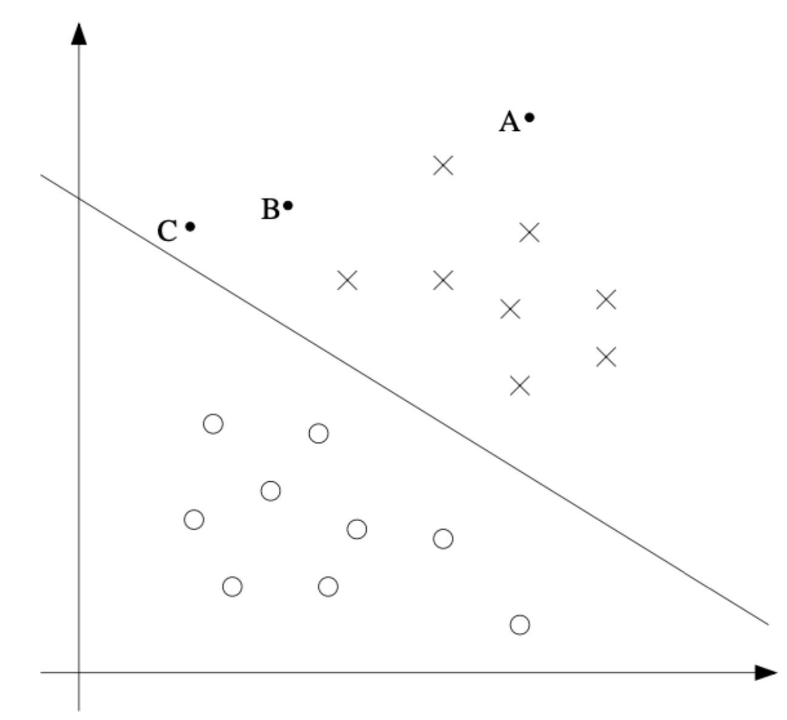
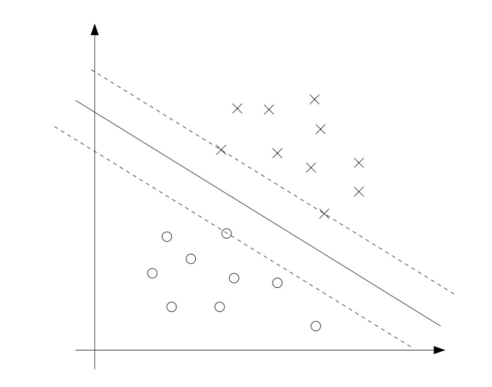
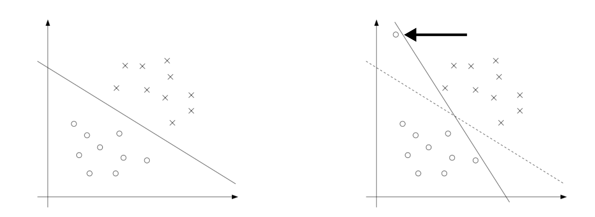
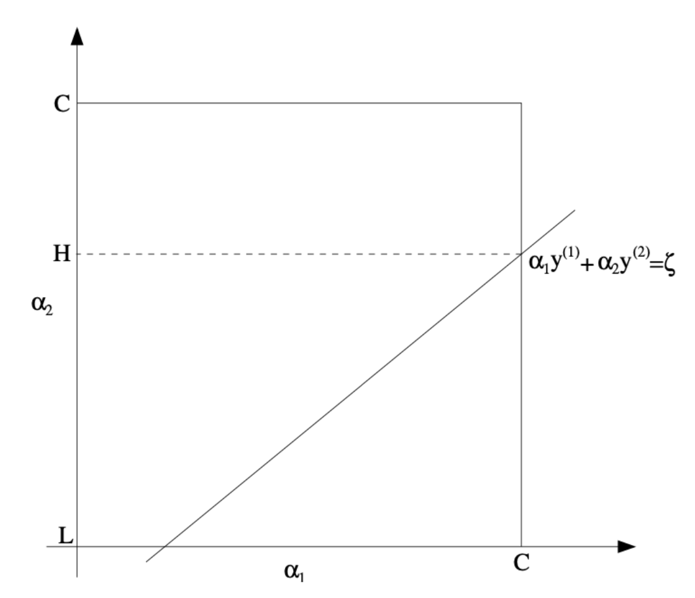

1. 서론 (Introduction)
- 머신러닝에서 분류 모델을 설계할 때, 우리는 단순히 데이터를 나누는 선을 찾는 것을 넘어 가장 안정적이고 일반화 성능이 뛰어난 결정 경계(Decision Boundary)를 찾고자 합니다. Support Vector Machine(SVM)의 핵심 아이디어인 마진(Margin)은 예측에 대한 모델의 “확신(confidence)”을 나타냅니다. 이번 포스트에서는 SVM의 수학적 최적화 과정을 깊이 있게 파헤쳐, 라그랑주 쌍대성(Lagrange Duality)을 통한 문제 변환부터 실제 해를 구하는 SMO 알고리즘까지의 흐름을 정리해 보겠습니다.

2. 최적 마진 분류기 (The Optimal Margin Classifier)
- 우리의 목표는 훈련 데이터에 대해 모든 예측을 정확하고 확신 있게 내릴 수 있는 최적의 마진을 찾는 것입니다. 이를 위해 기하학적 마진 \(\gamma\)를 최대화하는 최적화 문제는 다음과 같이 정의됩니다.
\[max_{\gamma,w,b}\frac{\gamma}{||w||}\]
단, 제약 조건은 \(y^{(i)}(w^{\top}x^{(i)}+b)\ge\gamma\) (모든 \(i=1,...,n\)에 대하여) 입니다. (초기 공식에서는 \(||w||=1\)이라는 비볼록(non-convex) 제약 조건이 있었으나, 이를 스케일링을 통해 제거하고 최적화하기 쉬운 형태로 변형합니다 ).
\(\frac{\gamma}{||w||} = \frac{1}{||w||}\) 관계를 이용하여, 위 최대화 문제는 다음과 같은 2차 계획법(Quadratic Programming) 최소화 문제로 변환할 수 있습니다.
\[min_{w,b}\frac{1}{2}||w||^{2}\] \[\textit{s.t.} \quad y^{(i)}(w^{\top}x^{(i)}+b)\ge1, \quad i=1,...,n\]
- 이 문제의 해가 바로 우리가 찾는 최적 마진 분류기(Optimal Margin Classifier)가 됩니다.
3. 최적화 배경지식: 라그랑주 승수와 쌍대성 (Optimization Backgrounds)
SVM의 복잡한 제약 조건을 다루기 위해, 우리는 라그랑주 승수법(Lagrange Multipliers)과 이를 확장한 일반화된 라그랑주안(Generalized Lagrangian) 개념을 먼저 짚고 넘어가야 합니다.
3.1. 원초적 문제 (Primal Problem)
- 가장 먼저, 부등식 없이 등식 제약 조건만 있는 단순한 형태의 문제를 생각해 봅시다.
\[\min_{w}f(w) \quad \text{s.t.} \quad h_{i}(w)=0, \quad i=1,\dots,l\]
- 이때 라그랑주안은 다음과 같이 정의되며, 우리는 각 변수와 승수에 대한 편미분 값을 0으로 설정하여 해를 찾습니다.
\[\mathcal{L}(w,\beta)=f(w)+\sum_{i=1}^{l}\beta_{i}h_{i}(w)\]
\[\frac{\partial\mathcal{L}}{\partial w_{i}}=0, \quad \frac{\partial\mathcal{L}}{\partial\beta_{i}}=0\]
- 이제 이를 부등식 제약 조건까지 포함된 원초적 최적화 문제(Primal optimization problem)로 일반화해 보겠습니다.
\[\begin{aligned} \min_{w} \quad & f(w) \\ \text{s.t.} \quad & g_{i}(w) \le 0, \quad i=1,\dots,k, \\ & h_{i}(w) = 0, \quad i=1,\dots,l. \end{aligned}\]
- 이에 대한 일반화된 라그랑주안은 새로운 라그랑주 승수(Lagrange multipliers) \(\alpha_i\)와 \(\beta_i\)를 도입하여 다음과 같이 정의됩니다.
\[\mathcal{L}(w,\alpha,\beta)=f(w)+\sum_{i=1}^{k}\alpha_{i}g_{i}(w)+\sum_{i=1}^{l}\beta_{i}h_{i}(w)\]
- 여기서 주어진 \(w\)에 대해 제약 조건을 얼마나 잘 만족하는지 평가하기 위해, 다음과 같은 함수 \(\theta_{\mathcal{P}}(w)\)를 정의합니다 (“P”는 Primal을 의미합니다).
\[\theta_{\mathcal{P}}(w) = \max_{\alpha,\beta:\alpha_{i}\ge0} \mathcal{L}(w,\alpha,\beta)\]
만약 어떤 \(w\)가 제약 조건을 하나라도 위반한다면(즉, \(g_i(w) > 0\) 이거나 \(h_i(w) \neq 0\) 인 경우), 내부의 최대화 연산 과정에서 \(\alpha_i\)나 \(\beta_i\)를 무한히 키울 수 있으므로 \(\theta_{\mathcal{P}}(w)\)의 값은 무한대가 됩니다.
반대로 제약 조건을 모두 만족한다면, 최대값을 만들기 위해 \(\alpha_i g_i(w)\) 항은 0이 되어야 하므로 이 함수는 단순히 원래의 목적 함수 \(f(w)\)와 같아집니다. 이를 조건부 수식으로 명확히 나타내면 다음과 같습니다.
\[\theta_{\mathcal{P}}(w) = \begin{cases} f(w), & \text{if } w \text{ satisfies primal constraints} \\ \infty, & \text{otherwise} \end{cases}\]
결과적으로, 이 \(\theta_{\mathcal{P}}(w)\)는 제약 조건을 위반하는 \(w\)에 대해서는 양의 무한대라는 페널티를 부여합니다. 따라서 우리가 풀고자 하는 원래의 최소화 문제는 다음과 같이 이 \(\theta_{\mathcal{P}}(w)\)를 최소화하는 문제와 완벽하게 동일해집니다.
원초적 문제의 최적값(value of the primal problem) \(p^*\)는 최종적으로 다음과 같이 \(\min \max\) 형태의 최적화 문제로 도출됩니다.
\[p^{*} = \min_{w}\theta_{\mathcal{P}}(w) = \min_{w}\max_{\alpha,\beta:\alpha_{i}\ge0}\mathcal{L}(w,\alpha,\beta)\]
3.2. 쌍대 문제 (Dual Problem)와 KKT 조건
원초적 문제(Primal Problem)에서 정의한 \(\min \max\) 형태의 식에서, 연산자의 순서를 바꾸면 우리는 쌍대 문제(Dual Problem)를 얻게 됩니다.
먼저 주어진 \(\alpha\)와 \(\beta\)에 대해 라그랑주안을 최소화하는 새로운 함수 \(\theta_{\mathcal{D}}(\alpha,\beta)\)를 정의해 봅시다 (“\(\mathcal{D}\)”는 Dual을 의미합니다).
\[\theta_{\mathcal{D}}(\alpha,\beta) = \min_{w}\mathcal{L}(w,\alpha,\beta)\]
- 이제 쌍대 최적화 문제(Dual optimization problem)는 이 \(\theta_{\mathcal{D}}(\alpha,\beta)\)를 최대화하는 문제로 다음과 같이 정의됩니다.
\[\max_{\alpha,\beta:\alpha_{i}\ge0} \theta_{\mathcal{D}}(\alpha,\beta) = \max_{\alpha,\beta:\alpha_{i}\ge0} \min_{w} \mathcal{L}(w,\alpha,\beta)\]
- 원초적 문제의 최적값을 \(p^*\)라고 할 때, 쌍대 문제의 최적값 \(d^*\)는 다음과 같이 정의되며, 어떠한 함수에 대해서도 “max min”은 “min max”보다 작거나 같다는 성질에 의해 다음 부등식이 항상 성립합니다.
\[d^{*} = \max_{\alpha,\beta:\alpha_{i}\ge0} \min_{w} \mathcal{L}(w,\alpha,\beta) \le \min_{w} \max_{\alpha,\beta:\alpha_{i}\ge0} \mathcal{L}(w,\alpha,\beta) = p^{*}\]
라그랑주 쌍대성(Lagrange Duality)과 \(d^* = p^*\) 성립 조건
- 일반적으로는 \(d^* \le p^*\) 이지만, 특정 조건 하에서는 두 값이 완전히 일치하는 강한 쌍대성(Strong Duality), 즉 \(d^* = p^*\)가 성립합니다. 강의 자료에 따르면 다음 조건들이 만족될 때 성립합니다 :
- 목적 함수 \(f\)와 부등식 제약 조건 함수 \(g_i\)가 볼록 함수(Convex)일 때.
- 등식 제약 조건 함수 \(h_i\)가 아핀 함수(Affine)일 때 (즉, \(h_i(w) = a_i^\top w + b_i\) 형태).
- 부등식 제약 조건 \(g_i\)가 엄격히 실현 가능(Strictly feasible)할 때 (모든 \(i\)에 대해 \(g_i(w) < 0\)을 만족하는 \(w\)가 적어도 하나 존재).
- 이 조건들이 충족되면 원초적 문제의 해 \(w^*\)와 쌍대 문제의 해 \(\alpha^*, \beta^*\)가 존재하며, \(p^{*} = d^{*} = \mathcal{L}(w^{*},\alpha^{*},\beta^{*})\) 가 성립합니다.
KKT (Karush-Kuhn-Tucker) 조건
- 위의 가정들이 성립할 때, 최적해 \(w^*, \alpha^*, \beta^*\)는 반드시 다음의 KKT 조건(Karush-Kuhn-Tucker conditions)을 모두 만족해야 합니다.
\[\begin{aligned} \frac{\partial}{\partial w_{i}}\mathcal{L}(w^{*},\alpha^{*},\beta^{*}) &= 0, \quad i=1,\dots,d \\ \frac{\partial}{\partial\beta_{i}}\mathcal{L}(w^{*},\alpha^{*},\beta^{*}) &= 0, \quad i=1,\dots,l \\ \alpha_{i}^{*}g_{i}(w^{*}) &= 0, \quad i=1,\dots,k \quad \text{(KKT dual complementarity condition)} \\ g_{i}(w^{*}) &\le 0, \quad i=1,\dots,k \\ \alpha_{i}^{*} &\ge 0, \quad i=1,\dots,k \end{aligned}\]
쌍대 상보성 조건 (Dual Complementarity Condition)과 서포트 벡터
- KKT 조건 중에서 SVM의 핵심 원리를 설명하는 가장 중요한 수식은 바로 세 번째 줄에 있는 쌍대 상보성 조건(Dual Complementarity Condition)입니다.
\[\alpha_{i}^{*}g_{i}(w^{*}) = 0, \quad i=1,\dots,k\]
두 수의 곱이 0이라는 것은, \(\alpha_i^*\)와 \(g_i(w^*)\) 둘 중 적어도 하나는 반드시 0이어야 함을 의미합니다.
즉, 만약 라그랑주 승수 \(\alpha_i^* > 0\) 이라면, 그에 대응하는 제약 조건식은 반드시 \(g_i(w^*) = 0\)이 되어야 합니다.
SVM의 맥락에서 \(g_i(w) \le 0\) 제약 조건이 등식(\(=0\))으로 활성화(active)된다는 것은, 해당 데이터 포인트가 결정 경계의 마진(Margin) 위에 정확히 걸쳐 있음을 의미합니다.
결과적으로 이는 대다수의 데이터는 \(\alpha_i=0\)을 가지고 오직 소수의 데이터 포인트만이 \(\alpha_i>0\)을 가져서 결정 경계를 형성하는 “서포트 벡터(Support Vectors)”가 된다는 사실을 수학적으로 증명해 줍니다.

4. SVM 쌍대 문제의 도출 (Optimal Margin Classifiers: The Dual Form)
- 우리는 앞서 최적 마진 분류기(Optimal Margin Classifier)를 찾기 위한 원초적(Primal) 최적화 문제를 다음과 같이 정의했습니다.
\[\begin{aligned} \min_{w,b} \quad & \frac{1}{2}||w||^{2} \\ \text{s.t.} \quad & y^{(i)}(w^{\top}x^{(i)}+b) \ge 1, \quad i=1,\dots,n. \end{aligned}\]
- 이 최적화 문제의 부등식 제약 조건을 표준 형태인 \(g_i(w) \le 0\) 꼴로 정리하면 다음과 같습니다.
\[g_{i}(w) = -y^{(i)}(w^{\top}x^{(i)}+b)+1 \le 0\]
4.1. 라그랑주안의 구성 및 편미분
- 이제 이 제약 조건을 라그랑주 승수 \(\alpha_i \ge 0\)를 이용하여 목적 함수에 결합하면, 다음과 같은 라그랑주안(Lagrangian) 식을 얻을 수 있습니다.
\[\mathcal{L}(w,b,\alpha) = \frac{1}{2}||w||^{2} - \sum_{i=1}^{n}\alpha_{i}[y^{(i)}(w^{\top}x^{(i)}+b)-1]\]
- 쌍대 문제(Dual Problem)를 도출하기 위해, 우리는 이 라그랑주안을 먼저 변수 \(w\)와 \(b\)에 대해 최소화해야 합니다. 이를 위해 \(\mathcal{L}\)을 각각 \(w\)와 \(b\)에 대해 편미분하고, 그 기울기가 0이 되는 지점을 찾습니다.
\[\begin{aligned} \nabla_{w}\mathcal{L}(w,b,\alpha) &= w - \sum_{i=1}^{n}\alpha_{i}y^{(i)}x^{(i)} = 0 \quad \Rightarrow \quad w = \sum_{i=1}^{n}\alpha_{i}y^{(i)}x^{(i)} \quad \text{[EQ. w]} \\ \frac{\partial}{\partial b}\mathcal{L}(w,b,\alpha) &= -\sum_{i=1}^{n}\alpha_{i}y^{(i)} = 0 \quad \Rightarrow \quad \sum_{i=1}^{n}\alpha_{i}y^{(i)} = 0 \quad \text{[EQ. b]} \end{aligned}\]
4.2. 목적 함수의 변환과 상쇄
- 위에서 구한 \(w\)에 대한 식 [EQ. w]를 원래의 라그랑주안 \(\mathcal{L}(w,b,\alpha)\)에 다시 대입하여 전개해 보겠습니다.
\[\mathcal{L}(w,b,\alpha) = \sum_{i=1}^{n}\alpha_{i} - \frac{1}{2}\sum_{i=1}^{n}\sum_{j=1}^{n}y^{(i)}y^{(j)}\alpha_{i}\alpha_{j}(x^{(i)})^{\top}x^{(j)} - b\sum_{i=1}^{n}\alpha_{i}y^{(i)}\]
- 여기서 매우 흥미로운 수학적 소거가 발생합니다. 편미분을 통해 얻은 [EQ. b]의 조건(\(\sum_{i=1}^{n}\alpha_{i}y^{(i)}=0\))에 의해, 위 식의 마지막 항인 \(b\sum_{i=1}^{n}\alpha_{i}y^{(i)}\) 부분이 통째로 0이 되어 사라집니다. 그 결과, 모델 파라미터 \(w\)와 \(b\)가 완전히 소거되고 오직 라그랑주 승수 \(\alpha\)에만 의존하는 새로운 함수 \(W(\alpha)\)가 도출됩니다.
4.3. 최종 쌍대 최적화 문제 (Dual Optimization Problem)
- \(\alpha_i \ge 0\)이라는 기본 조건과 위에서 얻은 등식 제약 조건을 모두 결합하면, 최종적으로 다음과 같은 SVM의 쌍대 최적화 문제를 얻게 됩니다.
\[\begin{aligned} \max_{\alpha} \quad & W(\alpha) = \sum_{i=1}^{n}\alpha_{i} - \frac{1}{2}\sum_{i=1}^{n}\sum_{j=1}^{n}y^{(i)}y^{(j)}\alpha_{i}\alpha_{j}\langle x^{(i)},x^{(j)}\rangle \\ \text{s.t.} \quad & \alpha_{i} \ge 0, \quad i=1,\dots,n, \\ & \sum_{i=1}^{n}\alpha_{i}y^{(i)} = 0. \end{aligned}\]
4.4. 절편 \(b^*\) 도출 및 내적을 이용한 예측
- 최적화 알고리즘을 통해 쌍대 문제의 최적해 \(\alpha^*\)를 구하고 나면, 앞서 구한 [EQ. w]를 통해 최적의 가중치 \(w^*\)를 계산할 수 있습니다. 이어서 절편(편향) \(b^*\)는 마진 경계(\(g_i(w)=0\))에 놓인 서포트 벡터들의 기하학적 특성을 이용하여 도출합니다.
\(b^*\) 도출 원리:
KKT의 쌍대 상보성 조건에 따라, \(\alpha_i^* > 0\)인 서포트 벡터들은 정확히 마진 경계선 위에 위치하므로 \(y^{(i)}(w^{*\top}x^{(i)} + b^*) = 1\) 을 만족하게 됩니다. 이론적으로는 단 하나의 서포트 벡터만 이 식에 대입해도 \(b^*\)를 구할 수 있습니다.
하지만 실제 컴퓨팅 환경에서는 수치적 안정성(Numerical stability)을 높이기 위해, 양성 클래스(\(y=1\))와 음성 클래스(\(y=-1\)) 양쪽 마진 경계의 정중앙(평균)을 취하는 방식을 사용합니다.
- 양성 클래스의 마진 경계: 결정 경계에 가장 가까운 양성 데이터들의 집합은 \(\min_{i:y^{(i)}=1} w^{*\top}x^{(i)}\) 로 표현됩니다.
- 음성 클래스의 마진 경계: 결정 경계에 가장 가까운 음성 데이터들의 집합은 \(\max_{i:y^{(i)}=-1} w^{*\top}x^{(i)}\) 로 표현됩니다.
우리가 찾는 최적의 초평면(결정 경계)은 이 두 경계의 정확히 한가운데를 지나야 하므로, 두 값을 더해 반으로 나누고 부호를 반전시켜 다음과 같은 최종 공식을 얻습니다.
\[b^{*}=-\frac{\max_{i:y^{(i)}=-1}w^{*\top}x^{(i)}+\min_{i:y^{(i)}=1}w^{*\top}x^{(i)}}{2}\]
- 모든 파라미터가 결정된 후, 새로운 데이터 포인트 \(x\)가 입력되었을 때 모델의 예측값(\(w^\top x + b\))을 계산하는 과정은 다음과 같이 전개됩니다.
\[w^{\top}x+b = \left(\sum_{i=1}^{n}\alpha_{i}y^{(i)}x^{(i)}\right)^{\top}x+b = \sum_{i=1}^{n}\alpha_{i}y^{(i)}\langle x^{(i)},x\rangle+b\]
- 이 마지막 수식이 의미하는 바는 엄청납니다. 새로운 데이터를 예측할 때 \(w\)를 직접 계산할 필요 없이, 오직 데이터 포인트들 간의 내적(Inner Product, \(\langle x^{(i)}, x \rangle\)) 연산만으로 모든 계산이 가능하다는 것을 보여주기 때문입니다. 이러한 특성 덕분에 SVM은 매우 고차원적인 데이터 공간에서도 효율적으로 학습할 수 있으며, 이 내적 연산을 커널 함수로 대체하는 커널 트릭(Kernel Trick)을 적용하여 복잡한 비선형 분류기로 쉽게 확장될 수 있습니다.
5. 정규화와 비선형 분리: 소프트 마진 (Regularization and Soft Margin)
- 현실의 데이터는 이상치(Outliers)나 노이즈로 인해 완벽하게 선형 분리가 불가능한 경우가 많습니다.

- 이를 해결하기 위해 각 데이터 포인트가 마진을 일부 침범하거나 오분류되는 것을 허용하는 슬랙 변수(Slack Variable) \(\xi_i \ge 0\)를 도입합니다.
\[\begin{aligned} \min_{w,b,\xi} \quad & \frac{1}{2}||w||^{2} + C\sum_{i=1}^{n}\xi_{i} \\ \text{s.t.} \quad & y^{(i)}(w^{\top}x^{(i)}+b) \ge 1-\xi_{i}, \quad i=1,\dots,n, \\ & \xi_{i} \ge 0, \quad i=1,\dots,n. \end{aligned}\]
- 여기서 파라미터 \(C\)는 마진을 넓게 유지하는 것과 오차를 줄이는 것 사이의 가중치를 조절하는 역할을 합니다. 이 식의 쌍대 형태를 구하면 하드 마진과 동일한 목적 함수 \(W(\alpha)\)를 가지지만, 제약 조건에 \(C\) 상한선이 추가됩니다.
\[\begin{aligned} \text{s.t.} \quad & 0 \le \alpha_{i} \le C, \quad i=1,\dots,n, \\ & \sum_{i=1}^{n}\alpha_{i}y^{(i)} = 0. \end{aligned}\]
- 변경된 KKT 조건은 \(\alpha_i\)의 값에 따라 데이터가 마진 바깥에 있는지(\(\alpha_i=0\)), 마진 경계에 있는지(\(0<\alpha_i<C\)), 혹은 마진 안쪽이나 오분류되었는지(\(\alpha_i=C\))를 명확하게 구분해 줍니다.
6. SMO 알고리즘 (Sequential Minimal Optimization)
- 소프트 마진의 쌍대 문제를 풀기 위해 우리는 SMO 알고리즘을 사용합니다. 이는 기계학습 최적화에서 자주 쓰이는 좌표 상승법(Coordinate Ascent Algorithm)에 기반을 두고 있습니다.
6.1. 좌표 상승법 (Coordinate Ascent Algorithm)
- 제약 조건이 없는 다음과 같은 일반적인 최대화 문제를 가정해 봅시다.
\[\max_{\alpha} W(\alpha_{1},\alpha_{2},\dots,\alpha_{n})\]
- 좌표 상승법은 가장 안쪽 루프에서 단 하나의 변수 \(\alpha_i\)만을 선택하여 최적화하고 나머지 변수들은 고정값으로 취급하는 과정을 수렴할 때까지 반복하는 알고리즘입니다.
[Algorithm: Coordinate Ascent] Loop until convergence { For i = 1, …, n, { i := {_i} W(1, …, {i-1}, i, {i+1}, …, _n) } }
6.2. SVM에서의 문제점과 SMO의 해결책
하지만 SVM 쌍대 문제에는 \(\sum_{i=1}^{n}\alpha_{i}y^{(i)}=0\) 이라는 제약 조건이 존재합니다 . 만약 좌표 상승법처럼 단 하나의 \(\alpha_1\)만 변경하려고 하면, 이 등식 제약 조건을 즉각적으로 위반하게 됩니다 .
따라서 SMO 알고리즘은 반드시 두 개의 \(\alpha\) 변수(예: \(\alpha_1, \alpha_2\))를 동시에 선택하여 최적화하는 방식을 취합니다 . 나머지 변수 \(\alpha_3,\dots, \alpha_n\)을 상수로 고정하면 다음의 선형 관계를 얻을 수 있습니다.
\[\alpha_{1}y^{(1)}+\alpha_{2}y^{(2)} = -\sum_{i=3}^{n}\alpha_{i}y^{(i)}\]
- 우변은 이미 고정된 상수이므로, 이를 \(\zeta\) (zeta)로 치환하면 다음과 같이 단순해집니다 .
\[\alpha_{1}y^{(1)}+\alpha_{2}y^{(2)} = \zeta\]
- 위 식을 이용해 \(\alpha_1\)을 \(\alpha_2\)에 대한 식으로 치환할 수 있습니다 .
\[\alpha_{1}=(\zeta-\alpha_{2}y^{(2)})y^{(1)}\]
- 이 치환된 \(\alpha_1\)을 원래의 목적 함수 \(W(\alpha)\)에 대입하면, 다변수 함수였던 최적화 문제가 오직 \(\alpha_2\)에 대한 1차원 2차 함수(quadratic function) 최소/최대화 문제로 극적으로 단순화됩니다 .
\[W(\alpha_{1},\alpha_{2},\dots,\alpha_{n}) = W((\zeta-\alpha_{2}y^{(2)})y^{(1)},\alpha_{2},\dots,\alpha_{n})\]
6.3. Box 제약 조건과 클리핑 (Clipping)
단순화된 2차 함수를 미분하여 \(\alpha_2\)에 대한 무제약 최적값 \(\alpha_2^{new, unclipped}\)을 구하는 것은 매우 쉽습니다. 하지만 소프트 마진 SVM에서는 각 \(\alpha_i\)가 \(0 \le \alpha_i \le C\) 라는 Box 제약 조건을 만족해야 합니다 .
위 그림처럼 두 변수의 선형 조건 \(\alpha_{1}y^{(1)}+\alpha_{2}y^{(2)}=\zeta\)가 \([0, C] \times [0, C]\) 상자 내부를 지나는 구간을 구하면, \(\alpha_2\)가 가질 수 있는 허용 범위의 하한(Lower bound) \(L\)과 상한(Upper bound) \(H\)를 계산할 수 있습니다 .
최종적으로, 무제약 상태의 최적값 \(\alpha_2^{new, unclipped}\)을 이 \([L, H]\) 구간 안으로 잘라내는 클리핑(Clipping) 과정을 거쳐 실제 업데이트할 \(\alpha_2^{new}\)를 확정합니다 .
\[\alpha_{2}^{new} = \begin{cases} H & \text{if } \alpha_{2}^{new, unclipped} > H \\ \alpha_{2}^{new, unclipped} & \text{if } L \le \alpha_{2}^{new, unclipped} \le H \\ L & \text{if } \alpha_{2}^{new, unclipped} < L \end{cases}\]
- 이러한 가벼운 2변수 최적화 과정을 전체 데이터에 대해 반복하며, 모든 데이터 포인트가 KKT 쌍대 상보성 조건을 만족하게 되면 수렴한 것으로 판단하고 알고리즘을 종료합니다.

7. SMO 알고리즘 실전 최적화 예시 (Toy Example)
- 앞서 다룬 SMO 알고리즘의 수학적 전개가 실제 계산 과정에서 어떻게 작동하는지 살펴보기 위해, 단 2개의 데이터 포인트만 존재하는 극단적으로 단순화된 모델을 최적화해 보겠습니다.
7.1. 문제 설정 (Initialization)
- 다음과 같은 2개의 2차원 데이터 포인트가 주어졌다고 가정해 봅시다.
- 양성 데이터 (\(i=1\)): \(x^{(1)} = (1, 2)^{\top}, \quad y^{(1)} = 1\)
- 음성 데이터 (\(i=2\)): \(x^{(2)} = (-1, -2)^{\top}, \quad y^{(2)} = -1\)
- 알고리즘을 시작하기 전, 라그랑주 승수와 하이퍼파라미터는 다음과 같이 초기화합니다.
- 초기 승수: \(\alpha_{1} = 0, \quad \alpha_{2} = 0\)
- 페널티 파라미터 (Soft Margin): \(C = 1\)
7.2. 등식 제약 조건과 치환 (Constraint & Substitution)
- SMO는 한 번에 두 개의 변수만 업데이트합니다. 여기서는 전체 변수가 2개뿐이므로 \(\alpha_1\)과 \(\alpha_2\)를 선택합니다. 먼저 등식 제약 조건 \(\sum \alpha_{i}y^{(i)} = 0\)을 전개합니다.
\[\alpha_{1}(1) + \alpha_{2}(-1) = 0 \quad \Rightarrow \quad \alpha_{1} = \alpha_{2}\]
- 이 단순한 관계식 덕분에, 우리는 \(\zeta = 0\)인 상태에서 \(\alpha_1\)을 완벽하게 \(\alpha_2\)로 치환할 수 있습니다. 상자 제약 조건(Box Constraint)인 \(0 \le \alpha_i \le C\)에 따라, \(\alpha_1 = \alpha_2\)이므로 \(\alpha_2\)가 가질 수 있는 유효 구간은 \([L, H] = [0, 1]\)이 됩니다.
7.3. 내적 계산 및 1차원 목적 함수 생성
- 목적 함수 \(W(\alpha)\)를 계산하기 위해 데이터 간의 내적(Inner Product)을 먼저 구합니다.
- \(\langle x^{(1)}, x^{(1)} \rangle = 1^2 + 2^2 = 5\)
- \(\langle x^{(2)}, x^{(2)} \rangle = (-1)^2 + (-2)^2 = 5\)
- \(\langle x^{(1)}, x^{(2)} \rangle = 1(-1) + 2(-2) = -5\)
- 이제 원래의 목적 함수 \(W(\alpha_{1}, \alpha_{2})\)에 \(\alpha_{1} = \alpha_{2}\)를 대입하여, 오직 \(\alpha_2\)에 대한 1차원 2차 함수로 만듭니다.
\[\begin{aligned} W(\alpha_{2}) &= (\alpha_{1} + \alpha_{2}) - \frac{1}{2}\left[ y^{(1)}y^{(1)}\alpha_{1}^{2}\langle x^{(1)}, x^{(1)} \rangle + y^{(2)}y^{(2)}\alpha_{2}^{2}\langle x^{(2)}, x^{(2)} \rangle + 2y^{(1)}y^{(2)}\alpha_{1}\alpha_{2}\langle x^{(1)}, x^{(2)} \rangle \right] \\ &= 2\alpha_{2} - \frac{1}{2}\left[ (1)(1)\alpha_{2}^{2}(5) + (-1)(-1)\alpha_{2}^{2}(5) + 2(1)(-1)\alpha_{2}^{2}(-5) \right] \\ &= 2\alpha_{2} - \frac{1}{2}\left[ 5\alpha_{2}^{2} + 5\alpha_{2}^{2} + 10\alpha_{2}^{2} \right] \\ &= 2\alpha_{2} - 10\alpha_{2}^{2} \end{aligned}\]
7.4. 미분 및 클리핑 (Optimization & Clipping)
- 이제 다변수 최적화 문제가 중학교 수준의 2차 함수 최대값 찾기 문제로 바뀌었습니다. 위 식을 \(\alpha_2\)에 대해 미분하여 0이 되는 지점을 찾습니다.
\[\frac{d W(\alpha_{2})}{d \alpha_{2}} = 2 - 20\alpha_{2} = 0 \quad \Rightarrow \quad \alpha_{2}^{new, unclipped} = 0.1\]
- 구해진 무제약 최적값 \(0.1\)이 앞서 구한 허용 구간 \([L, H] = [0, 1]\) 내에 존재하는지 확인(Clipping)합니다. 구간 안에 포함되므로 값은 그대로 확정됩니다.
- 업데이트 결과: \(\alpha_{2}^{new} = 0.1\)
- 관계식에 의한 도출: \(\alpha_{1}^{new} = \alpha_{2}^{new} = 0.1\)
7.5. 최종 가중치 \(w\) 도출
- 업데이트된 \(\alpha\) 값들을 이용해 최적의 결정 경계 가중치 \(w\)를 계산해 봅니다.
\[\begin{aligned} w &= \sum_{i=1}^{2} \alpha_{i}y^{(i)}x^{(i)} \\ &= 0.1(1)\begin{pmatrix} 1 \\ 2 \end{pmatrix} + 0.1(-1)\begin{pmatrix} -1 \\ -2 \end{pmatrix} \\ &= \begin{pmatrix} 0.1 \\ 0.2 \end{pmatrix} + \begin{pmatrix} 0.1 \\ 0.2 \end{pmatrix} = \begin{pmatrix} 0.2 \\ 0.4 \end{pmatrix} \end{aligned}\]
- 결론: 아주 단순화된 예시이지만, SMO 알고리즘이 1) 등식 조건을 이용해 변수를 하나로 치환하고, 2) 1차원 2차 함수 미분을 통해 무제약 해를 구한 뒤, 3) Box 제약 조건 안으로 클리핑하는 과정을 수만 개의 데이터 쌍에 대해 반복하며 전역 최적점(Global Optimum)을 향해 빠르게 수렴해 나간다는 원리를 명확하게 확인할 수 있습니다.